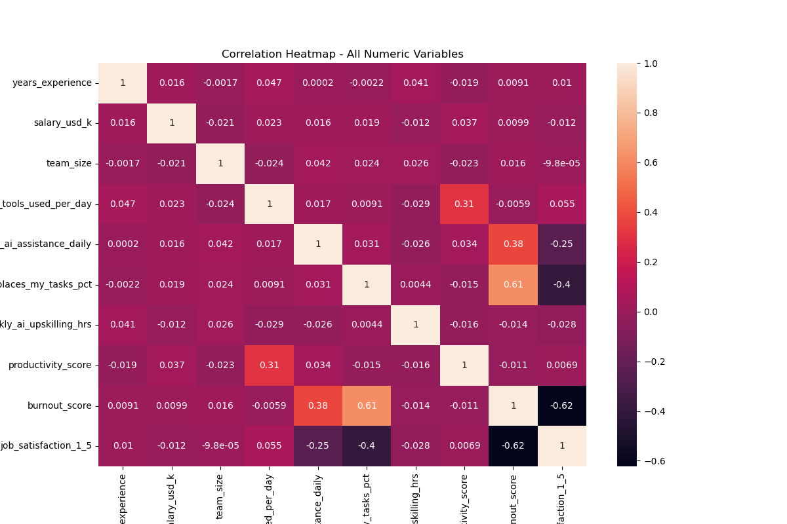
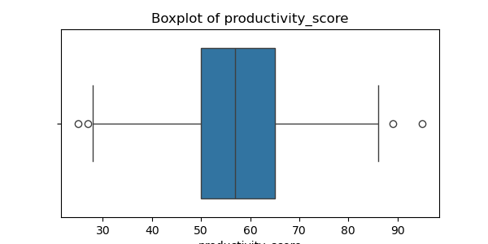
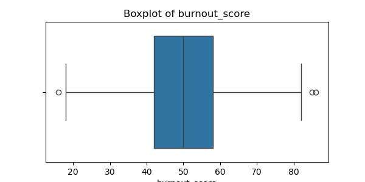
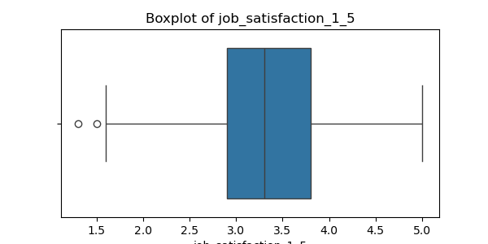

DATA SCIENCE PROJECT
A Python Data Science project exploring how AI adoption affects employee burnout, job satisfaction, productivity, and attrition risk using EDA, hypothesis testing, and machine learning.
Made By: Your Name
Rows
Features
Strong Corr
Best R²
The heatmap shows relationships among numeric variables. It helped identify strong positive and negative connections such as burnout, job satisfaction, productivity, and AI task replacement.

Boxplots were used to identify unusual values in important variables before analysis. This improves data quality and makes findings more reliable.



Dual Impact of AI
AI improves productivity when used wisely, but excessive task replacement can increase burnout.
Employee Satisfaction
Lower job satisfaction strongly connects with higher attrition risk.
Balanced Adoption
Organizations should adopt AI as assistance, not total replacement.
Data Driven Decisions
Analytics can help create healthier, smarter, and more productive workplaces.